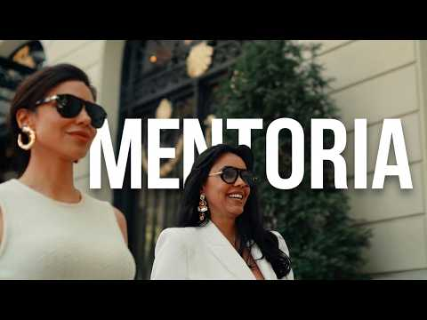

Posicionamento · Bastidores em Madri
Marca premium: como transformar repertório em decisões
Nos bastidores de um encontro em Madri, Clara do Vale mostra como comunicação, escuta e observação de ambientes podem orientar escolhas para uma marca premium.
Adaptação editorial a partir do acervo de Clara do Vale.

Retrato editorial · Acervo da marca, não é um registro do vídeo
Uma marca premium precisa tornar perceptível aquilo que a empresária já sabe entregar. Quando a profundidade do trabalho fica clara apenas para quem o executa, existe uma distância entre competência e comunicação. Antes de aumentar o volume de conteúdo ou acrescentar novos serviços, vale investigar essa distância.
Nos bastidores de um dia de trabalho em Madri, Clara do Vale percorre esse desafio por diferentes caminhos: produção de imagens, conversa estratégica com uma aluna, observação de ambientes e reflexão sobre experiências. O fio condutor não é o destino da viagem. É a capacidade de transformar referências em escolhas para o negócio.
Marca premium começa pela percepção, não só pelo discurso
O dia começa com uma produção de fotos e vídeos para a marca de Clara. Na apresentação dessa cena, ela explica que uma marca também se constrói pelas sensações que provoca. As imagens carregam uma mensagem sobre a visão de vida que uma mulher deseja realizar.
Essa perspectiva convida a olhar para a comunicação como um conjunto. Texto e imagem não deveriam apresentar ambições incompatíveis. Uma fotografia pode expressar uma direção, mas a explicação do trabalho precisa ajudar o público a compreender o que existe por trás daquela presença.
Como aplicação prática, revise uma apresentação recente da sua marca. Pergunte que sensação ela desperta e qual entendimento oferece sobre o seu trabalho. Se a estética chama atenção, mas a mensagem continua imprecisa, a tarefa não está concluída. Presença visual e clareza precisam trabalhar juntas.
O ponto cego de quem conhece demais o próprio método
Na conversa com uma empresária acompanhada por Clara, com a participação de Ed, surge uma dificuldade concreta: a complexidade de um método nem sempre aparece com nitidez na comunicação. Quem conhece cada detalhe pode não perceber o que ainda precisa ser explicado a quem está de fora.
O diálogo passa pelo trabalho com clínicas e pela distância entre o repertório das equipes e aquilo que chega ao público. O trecho não apresenta uma medição de desempenho. Ele expõe um problema de tradução: possuir conhecimento e conseguir torná-lo compreensível são tarefas diferentes.
Uma das reflexões centrais da conversa é ouvir o que outra pessoa entendeu. Isso desloca a avaliação de uma pergunta confortável, sobre gostar ou não da apresentação, para uma investigação mais útil: a mensagem recebida corresponde ao que se pretendia comunicar?
Para aplicar essa ideia, apresente sua comunicação a alguém que não participe da operação. Peça que essa pessoa explique, com as próprias palavras, o que você faz, para quem e qual transformação propõe. Use as diferenças entre a intenção e a resposta para revisar a mensagem. Trata-se de uma sugestão editorial derivada da conversa, não de um roteiro reproduzido do encontro.
Mudar de ambiente só faz sentido quando muda decisões
Clara explica que gosta de retirar a empresária do ambiente habitual do negócio. Na visão apresentada no vídeo, mudar o entorno amplia aquilo que se consegue observar. Para quem trabalha com marcas, essa atenção pode transformar uma experiência de viagem em repertório profissional.
Durante o encontro em Madri, a observação se organiza em torno de questões específicas: o que desperta desejo, o que amplia o valor percebido e o que faz uma experiência parecer excepcional desde o primeiro contato. Outra pergunta atravessa essa leitura: onde termina o produto e começa a marca?
O passo decisivo vem depois da observação. Clara relata que parte do trabalho foi transformar aquelas referências em decisões para o negócio da aluna no Brasil. O vídeo não detalha quais mudanças foram implementadas nem apresenta seus efeitos posteriores. Por isso, a lição disponível é sobre o processo de escolha, não sobre uma transformação financeira comprovada.
Para levar essa lógica ao cotidiano, experimente registrar três pontos ao observar uma experiência:
- O que chamou sua atenção: descreva o elemento concreto, sem ficar apenas na impressão de que tudo era especial.
- O que esse elemento comunicou: identifique a sensação e a expectativa despertadas.
- Que decisão isso sugere: avalie se a referência faz sentido para a identidade e a entrega da sua marca.
Essa organização é uma proposta prática de leitura do conteúdo. Seu objetivo é evitar que a inspiração termine numa coleção de imagens sem consequência para o negócio.
Escolher melhor também é preservar profundidade
Ao comentar o acompanhamento da aluna, Clara distingue fazer mais de escolher melhor. A reflexão é importante porque crescimento não precisa ser interpretado apenas como multiplicação de tarefas. No contexto mostrado, o trabalho envolve olhar para o que já foi construído e decidir o próximo estágio.
Há também um limite entre experiência e exposição. Clara conta que parte dos momentos vividos com a aluna permanece privada. Nem toda conversa precisa virar conteúdo. Para quem constrói uma marca pessoal, essa distinção permite pensar a comunicação sem transformar toda relação de acompanhamento em material público.
Mais adiante, o vídeo contrapõe excelência e exaustão. Na leitura editorial desse trecho, a pergunta relevante é se as escolhas do negócio permitem sustentar a profundidade da entrega. Apenas elevar o investimento inicial, sem essa reflexão, não resume o argumento desenvolvido ao longo do encontro.
Uma experiência coerente deixa algo além da venda
No jantar com parte da equipe na Europa, Clara volta a observar os códigos do ambiente. A atmosfera do restaurante se conecta, para ela, à filosofia Wild e à identidade que representa. O relato mostra uma referência que faz sentido por afinidade com a marca, não apenas por sua aparência.
A reflexão final distingue construir produtos e serviços de deixar uma marca por meio das experiências criadas. Para aplicar essa perspectiva, escolha um ponto de contato do seu negócio e examine o que ele comunica hoje. Depois, defina uma mudança concreta que aproxime essa experiência daquilo que você deseja representar.
Perguntas frequentes
O que uma marca premium comunica além da competência?
Na perspectiva apresentada por Clara, comunica sensações, visão e identidade. A competência precisa se tornar perceptível na mensagem e na experiência, não permanecer conhecida apenas por quem realiza o trabalho.
Como identificar um ponto cego na comunicação?
Ouça o que alguém de fora compreendeu sobre o seu trabalho. A conversa do vídeo destaca a importância dessa segunda perspectiva para perceber diferenças entre o que se pretende transmitir e o que foi entendido.
Qual é o papel do ambiente na construção de marca?
Ele oferece referências para observar desejo, percepção e experiência. O encontro em Madri destaca que o repertório precisa alimentar decisões para o negócio, em vez de permanecer apenas como inspiração.
Para aprofundar · No YouTube
Assista aos bastidores em Madri
Um dia em Madri construindo a marca premium de uma cliente especial. O vídeo de Clara do Vale que deu origem a esta leitura.

O player só se conecta ao YouTube quando você clicar. O serviço poderá receber dados de navegação. A reprodução não começa automaticamente.
Prefere assistir no YouTube? ↗Nota editorial
Adaptação editorial a partir do acervo de Clara do Vale. Elaborada a partir da transcrição do vídeo, com aplicações práticas identificadas no texto. Rascunho editorial sem revisão humana. Não revisado ou aprovado por Clara.
Fonte: Um dia em Madri construindo a marca premium de uma cliente especial. Esta é uma adaptação, não uma transcrição literal.